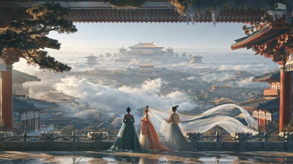

← 案例图谱AI33 / 局部机制／局限参考
巨构：心行处灭〖AI全民制作人〗
巨构AI · 45.4万播放快照 · ≥10万 · B站原作 ↗
红塔、长殿、暗框门、竹影、金环与白墙盆景形成统一暖灰系列，多个语汇与AI28/31/32重复，作为变体研究。

约45.920秒 · 案例代表帧从画面里找依据
这一例先看什么
红塔、长殿、暗框门、竹影、金环与白墙盆景形成统一暖灰系列，多个语汇与AI28/31/32重复，作为变体研究。
审美判断
暗装饰框、红白亮门与竹影金墙主次明确，三人阳台构图以人物和白飘带作为尺度锚点；底部标识低对比仅辅助。
迁移到自己的题材
世界观设定、建筑概念、游戏场景、旅行氛围、神圣感、孤独感或压迫感。
教学提问：画面里有什么告诉观众“它有多大”？哪些地方值得停留，哪些重复景观可以删掉？
带画面的分析单元
图像标出取样时间，对应观察中的关键状态。单帧不能独立证明运动，连续性请结合摘录。表达作用与应用场景是教学解读，复现路线是建议，不是原作者工程还原。
分析单元 01 / 0—6秒
云上红塔／长殿／尺度人物
实际观察
森林孤岛上的红塔转云上长殿，细小人物形成尺度对比。
表达作用（教学解读）
用熟悉尺寸与层次，让宏大空间被感知；留停帮助观众建立尺度。
具体应用场景
世界观、建筑概念、场景设定、神圣、敬畏、孤独和压迫。
复现建议（非原作者工程还原）
深度雾、前中后层、缓慢相机运动与暖冷光。
直出判断：有素材后雾与慢推容易；建筑美术需生成或3D
常见误用：没有比例参照；每镜同一宏大构图；雾遮住所有结构；反射与相机运动不一致。
分析单元 02 / 6—16秒
暗框亮门／竹影暖墙／圆孔取景
实际观察
深色装饰边框围住巨大红白门与竖向亮光；转竹影金墙、圆孔内远门。
表达作用（教学解读）
通过变化与稳定的比例让信息有轻重。视觉密度来自切镜、版式与局部动画三个层面，不只靠刀数。
具体应用场景
所有形式；尤其高潮前的蓄力、解释段的阅读、回忆段的停留和快慢对照。
复现建议（非原作者工程还原）
前景框遮罩、软发光、阴影纹理及圆形遮罩分层。
直出判断：简化框景/发光/竹影容易；原建筑和光照关系需素材
常见误用：全片等密度；把闪帧当新镜；高切速被当成质量分；没有稳定段供观众理解。
分析单元 03 / 16—32秒
悬空长廊／云海／红色圆门
实际观察
长廊横跨云崖，金墙树影接厚墙中的红色圆门与岩石。
表达作用（教学解读）
通过变化与稳定的比例让信息有轻重。视觉密度来自切镜、版式与局部动画三个层面，不只靠刀数。
具体应用场景
所有形式；尤其高潮前的蓄力、解释段的阅读、回忆段的停留和快慢对照。
复现建议（非原作者工程还原）
透视构图先由源图确定，云雾噪声位移，远近层有不同运动速度。
直出判断：简化云雾和视差容易；长廊连续几何较难
常见误用：全片等密度；把闪帧当新镜；高切速被当成质量分；没有稳定段供观众理解。
分析单元 04 / 32—42秒
柱列消失点／云瀑与岩树
实际观察
白红长柱廊延伸至远处，接山石树木和殿下云水流。
表达作用（教学解读）
通过变化与稳定的比例让信息有轻重。视觉密度来自切镜、版式与局部动画三个层面，不只靠刀数。
具体应用场景
所有形式；尤其高潮前的蓄力、解释段的阅读、回忆段的停留和快慢对照。
复现建议（非原作者工程还原）
柱列透视、层级遮挡、流动纹理和细小人物作为空间标尺。
直出判断：流动纹理/调色容易；精准建筑与水流需生成或3D
常见误用：全片等密度；把闪帧当新镜；高切速被当成质量分；没有稳定段供观众理解。
分析单元 05 / 42—50秒
阳台人物／长白飘带／建筑视差
实际观察
三人在阳台前，长飘带与云持续运动，柱与屋顶框住远方宫城；后为白衣人物行于石道。
表达作用（教学解读）
用熟悉尺寸与层次，让宏大空间被感知；留停帮助观众建立尺度。
具体应用场景
世界观、建筑概念、场景设定、神圣、敬畏、孤独和压迫。
复现建议（非原作者工程还原）
前景建筑、中景人物、远城分层，飘带需源视频或布料模拟。
直出判断：微视差容易；人物衣发和飘带连续动作较难
常见误用：没有比例参照；每镜同一宏大构图；雾遮住所有结构；反射与相机运动不一致。
分析单元 06 / 50—61.7896秒
金环框景／极简白墙／标志淡入
实际观察
金环框住云中宫殿，收束至白墙盆景与巨构AI标志。
表达作用（教学解读）
用熟悉尺寸与层次，让宏大空间被感知；留停帮助观众建立尺度。
具体应用场景
世界观、建筑概念、场景设定、神圣、敬畏、孤独和压迫。
复现建议（非原作者工程还原）
环形前景遮罩、云雾、简洁字标透明度动画。
直出判断：简化金环/雾/字标淡入容易
常见误用：没有比例参照；每镜同一宏大构图；雾遮住所有结构；反射与相机运动不一致。
用连续画面核对
保留原研究的多段局部摘录。片段含音轨不代表已听审；本资料不评价音乐卡点或对白节奏。
短时变化怎样理解
2–4与10–12秒各1切；42–46秒同阳台人物/长飘带和云连续变化，确认0次主切，不能按衣带波动虚增速度。
把镜头连接、版式更新、局部图层变化和镜内运动分开记录。所查窗口是下限，不是全片平均或AI／人工排名。
原始逐窗记录 →这次练习的约束
同一环境做“敬畏”和“孤独”两版，不换主体，仅改变人物比例、负空间、镜头停留和前景遮挡。
先写“我希望观众明白／感到什么”，再选本页的一种手法。完成无效果基础版后再加层；解释新增层带来的收益和代价。
打开练习与复盘表 →来源、观看范围与制作归属
实际检查范围：实际查看31张约2秒概览0–60.5242；2.017–3.995与10.007–11.9844共52密集帧，实际约12.64/s；42.005–45.920另34帧，约8.43/s。源61.789563秒3840×2148，nominal fps 25.25，时间依实际PTS。三段4秒摘录。未听审，未连续完整音画观看。
制作线索：巨构AI，第一方45.4万，2026-08-08；含AI生成内容/AI合成，角标称由updream生成。不能据此确定逐镜模型或自动剪辑。
边界：保留同系列素材/框景变体参考，不作为多制作路径的独立代表。飘带与人物动作需要源视频或布料模拟，简化雾层不是整套巨构美术。
播放快照保存时间（UTC）：2026-10-20T15:17:58.725679+00:00。H30制作方式为推定；同源改编、仿作和转载依原记录标注。
原始案例记录 · 选样表把你的判断留下来
笔记仅尝试保存在本机浏览器；浏览器策略可能限制本地文件存储，重要内容请导出。
沿着同一问题继续阅读
 AI47
AI47细节、反应与转折
星空漂浮、舞厅、卡通群岛、玩偶舞台形成不同媒介段落；服装与双人关系作为锚点，场景丰富度不能仅归功剪辑转场。
主要样本7个分析单元
 H42
H42漫画、纸张与记忆
冷灰漫画与紫发绿眼建立人物焦点；窗列和面部反打改变心理距离，雪和纸纹承担的是空气与记忆材质。
主要样本8个分析单元
 H40
H40漫画、纸张与记忆
胶带照片、手部细节与漫画条带将关系转化为可触摸的记忆；避免每一种情绪都用同一纸张模板。
主要样本8个分析单元